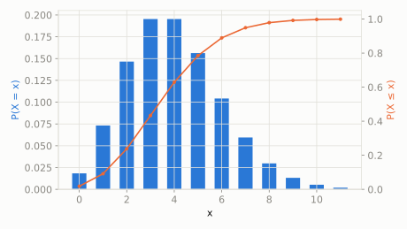

On a clear night, a kid lying in the backyard sees on average 4 shooting stars per hour.
What's the chance they see exactly 6 shooting stars in the next hour?
scipy.stats.poisson
The distribution of rare, independent events counted over a fixed window of time or space, when you only know the *average* rate. It's the limit of Binomial when n is huge, p is tiny, and n*p settles on a fixed average -- lots of chances, each individually unlikely.
| parameter | default used here | meaning |
|---|---|---|
mu | 4 | average number of events in the interval (lambda) |
On a clear night, a kid lying in the backyard sees on average 4 shooting stars per hour.
What's the chance they see exactly 6 shooting stars in the next hour?
scipy.statsimport scipy.stats as stats
import numpy as np
dist = stats.poisson(mu=4)
print('P(exactly 6 shooting stars):', round(dist.pmf(6), 4))
print('P(more than 6):', round(dist.sf(6), 4))